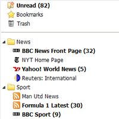
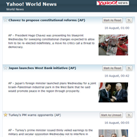
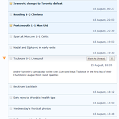
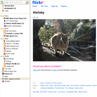
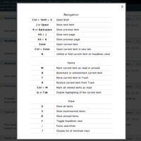
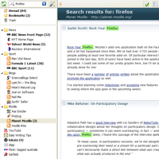
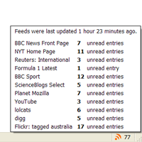
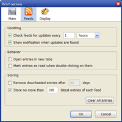

{kind=link}
Brief integrates with Live Bookmarks. All you need to do is to select the folder containing your feeds.
{kind=link}
The list of feeds is displayed in a sidebar. You can click on a single feed or on a whole folder to view it.
{kind=link}
The content is displayed on a seamless page. The unread items are highlighted and there are some handy buttons on each entry to mark it as read, star it, or delete it.
{kind=link}
You may decide to view only headlines and unfold the entries you want to read in full. You can also choose to display only the unread items, or the starred ones.
{kind=link}
Click on entry's title to open the related webpage.
{kind=link}
Keyboard shortcuts make it faster to navigate through the pile of news.
{kind=link}
Use the search box to quickly find a piece of news. Because entries are stored in a database, you have a record of everything you've read.
{kind=link}
Brief checks feeds for updates in the background and notifies you about new entries. The statusbar icon shows the number of unread entries.
{kind=link}
You can select how often to check for updates and how long to keep the downloaded entries. You may even have separate settings for each feed, if you need.